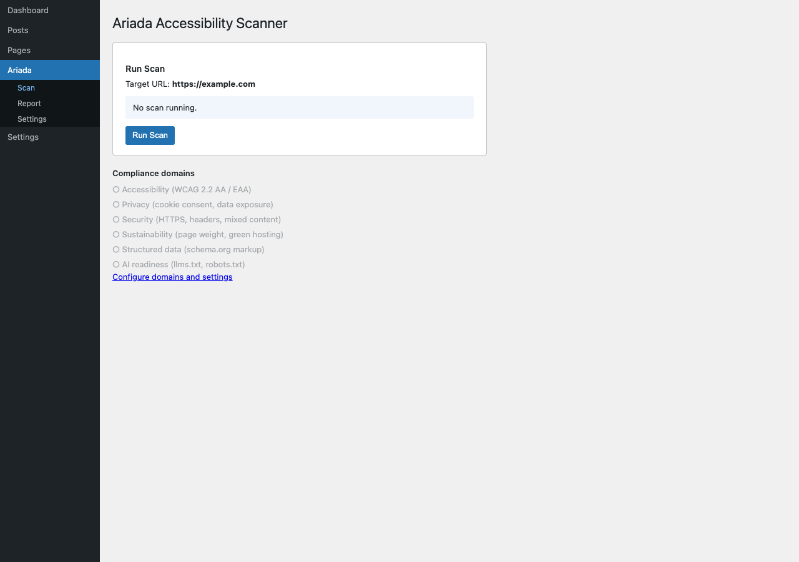
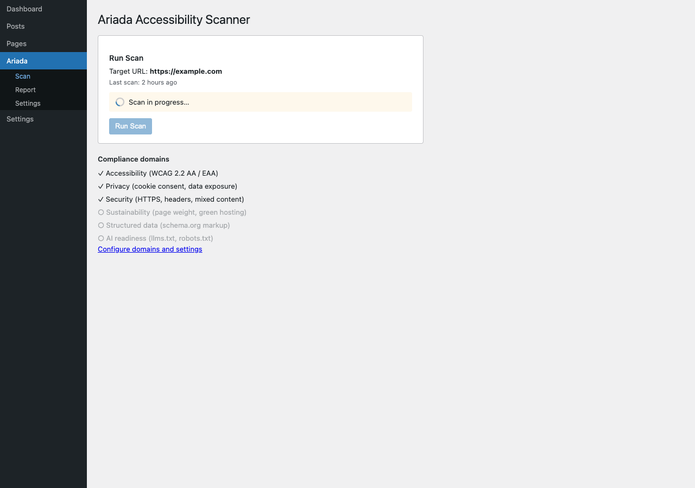
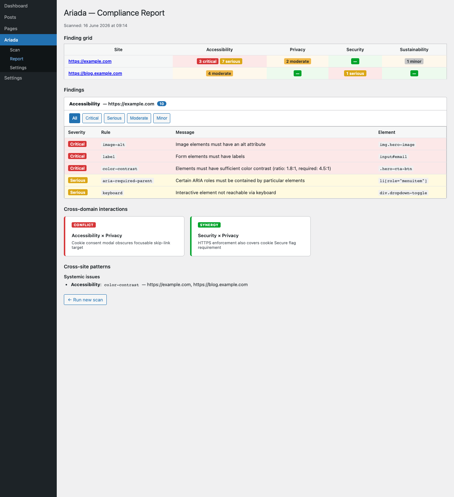
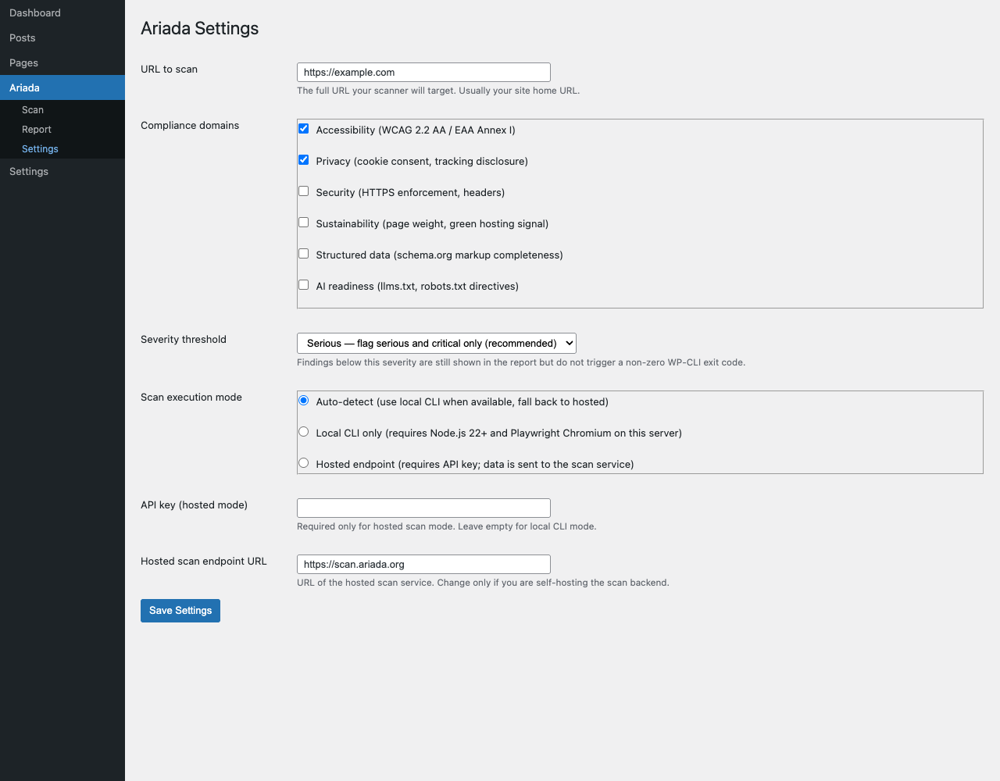
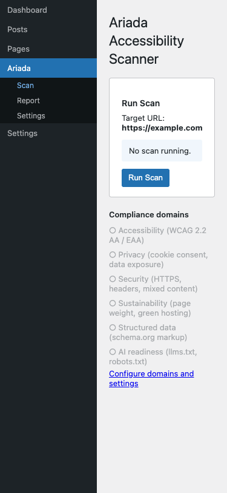
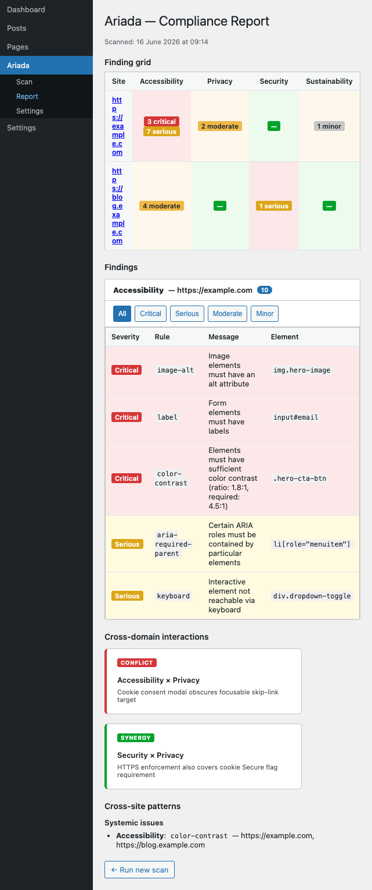

What this module is
The Ariada WordPress admin plugin adds a native wp-admin
interface to the multi-domain accessibility scanner: scan, report, and
settings pages that use WordPress's own UI components (wp-list-table,
form-table, button button-primary) so the plugin looks
and feels like a first-party WordPress screen.
admin/scan.php, admin/report.php,
admin/settings.php, admin/network.php) and the
associated CSS / JavaScript assets exist in the repository. The screenshots below
are rendered from those real PHP / HTML pages by the Playwright harness, not from
a Figma comp. However, the plugin is not yet listed on WordPress.org, and several
features documented in the assessment (polling, CSV export, in-editor sidebar)
are identified gaps, not yet shipped.
- Type
- WordPress plugin — PHP admin pages with AJAX-driven scan + WP REST API endpoints
- Where it lives
plugins/ariada-wordpress/in the monorepo- What it runs
- Calls the Ariada scan engine via the REST API endpoint; results stored in WP options; displayed in
admin/report.php - Accessibility
- Uses
aria-live="polite"on scan status,role="region"+aria-labelon scrollable tables,prefers-reduced-motionfor the spinner - Status
- PHP admin pages and assets present; WordPress.org listing not yet published; scan-status polling and CSV export are identified gaps
Who uses it & why
| Role | How they use it | Value |
|---|---|---|
| WordPress site owner (non-developer) | One-click scan of their own site from inside wp-admin; no command line needed | High — zero external-tool dependency |
| WordPress developer / agency | Scan client sites from the dashboard; include in the delivery checklist | High |
| Accessibility consultant | Quick audit of a client's WordPress site without installing a separate tool | Medium-High |
| Public-sector WordPress operator | Ongoing EAA compliance monitoring integrated into the existing WordPress workflow | High — EAA mandate drives adoption |
WordPress powers approximately 43% of all websites (WordPress.org 2025). The WordPress admin surface puts the Ariada scanner in front of the largest single CMS audience without requiring any command-line or developer tooling.
Distribution — free and open source
The WordPress plugin is free and open source under the EUPL-1.2 licence. There is no account and no external service to use the wp-admin scanner.
| Capability | Availability |
|---|---|
| One-click six-domain WordPress scan from wp-admin | Free · open source |
| Report page with findings by domain and severity | Free · open source |
| Settings: per-domain toggle, scan schedule | Free · open source |
| Network-mode support (WordPress multisite) | Free · open source |
Getting started
- Discover — WordPress.org plugin directory and GitHub.
- Install — one-click install from the WP plugin directory; no API key or external account required.
- First value — press Scan from the wp-admin dashboard; get a six-domain compliance report on your site.
- Habit — schedule weekly scans; archive the report page output as the compliance audit trail per EAA / ADA obligations.
- Contribute — the PHP plugin is open source; issues and PRs are welcome for coverage gaps and WordPress.org compatibility.
Documentation & help — current state
- Install
- Upload
plugins/ariada-wordpress/towp-content/plugins/and activate from the Plugins screen. No API key required for basic scans. - Docs site
apps/docs(Astro Starlight) needs a "WordPress" guide: install → first scan → reading the report → settings → network mode.- README.txt
- A WordPress-format
README.txt(required for WordPress.org submission) is the top follow-up; without it the plugin cannot be listed in the directory.
AI chat & digital-adoption helpers — plan
- In-admin AI assistant — "explain this finding", "show me the WordPress fix" — displayed in the report page as a collapsible panel, triggered only on user action.
- Block-editor sidebar — a real-time accessibility check per Gutenberg block as the editor types (the direction the market leader Equalize Digital Accessibility Checker has moved in their 2025 update; currently a gap in Ariada's plugin).
Screenshots — click any image to open it full size
From the end-to-end Playwright harness. Each thumbnail opens a full-size, zoomable overlay.






Assessment summary
Full assessment is in assessment.html. Headline: the plugin uses WordPress native UI patterns correctly (wp-list-table, aria-live, role=\"region\") and is a solid accessible starting point. Key gaps before WordPress.org listing: scan-status polling (currently hangs on async scans), CSV export, a first-run welcome screen, and a README.txt in WordPress format. Competitors compared: Equalize Digital Accessibility Checker, Sa11y, WP Accessibility by Joe Dolson, accessiBe WordPress.